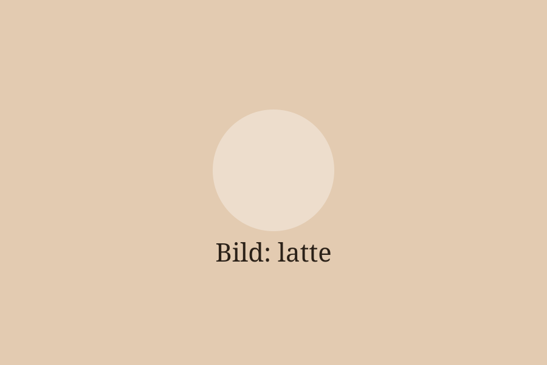

Fika som på farmors tid
Nybakat varje morgon, kaffe från ett litet rosteri i Järna och ett hörn som alltid är ledigt för dig. Välkommen in.

Veckans favoriter
-
 Kanelbulle – Kardemumma i degen, pärlsocker på toppen. Bakad kl 06.30.
– 38 kr
Kanelbulle – Kardemumma i degen, pärlsocker på toppen. Bakad kl 06.30.
– 38 kr
-

Latte – Dubbel espresso och skummad mjölk. Havremjölk utan extra kostnad. – 49 kr -
 Dagens soppa – Just nu: rostad tomatsoppa med surdegsbröd och örtolja.
– 115 kr
Dagens soppa – Just nu: rostad tomatsoppa med surdegsbröd och örtolja.
– 115 kr
Öppet just nu
Vi har öppet måndag–fredag 07.30–18.00 och helger 09.00–17.00. Du hittar oss på Hörngatan 12, två minuter från Mariatorget.